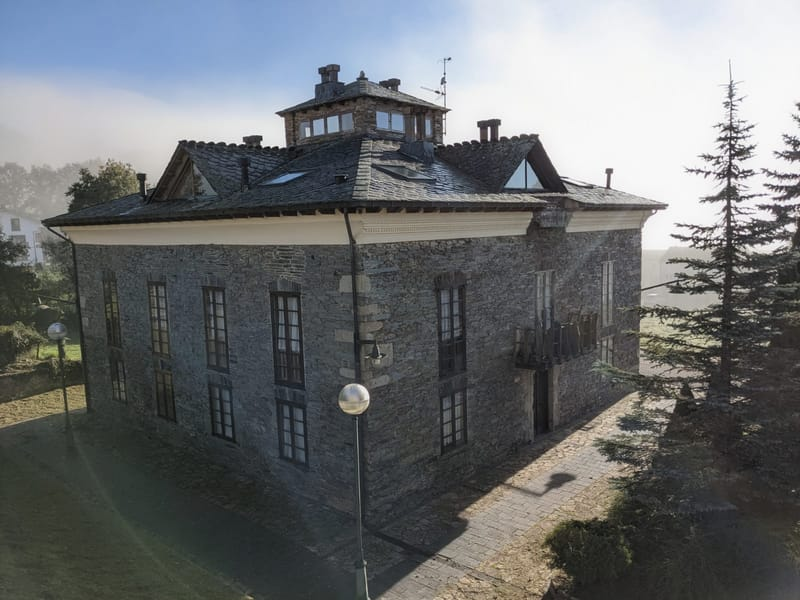
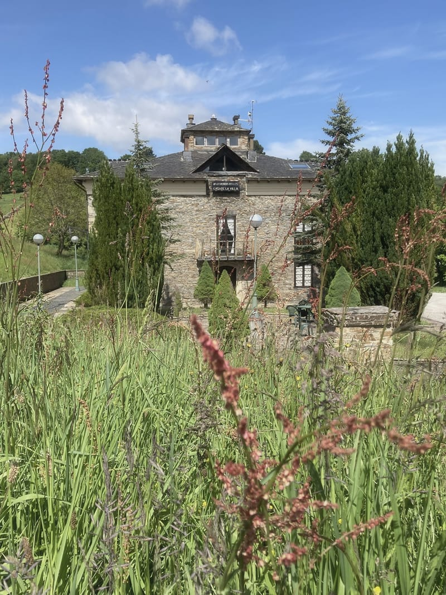
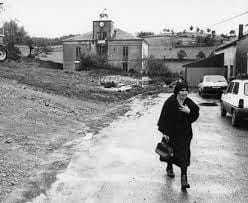
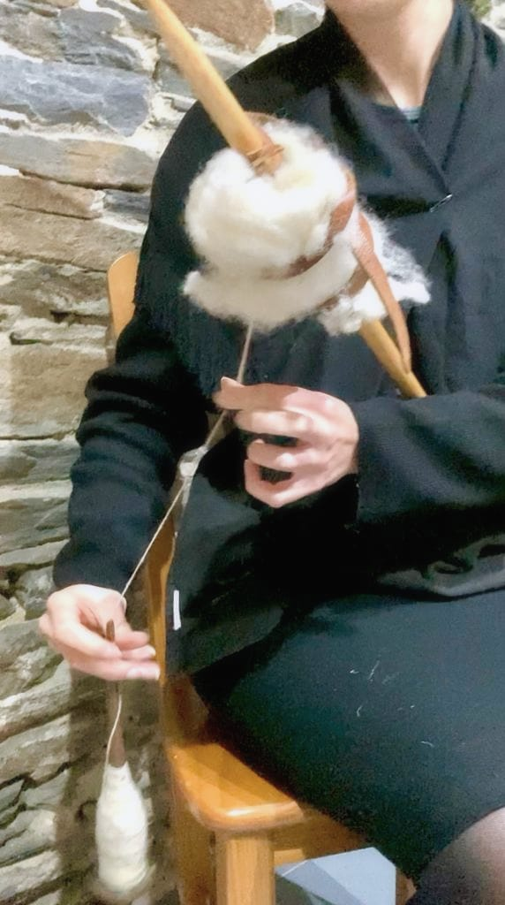
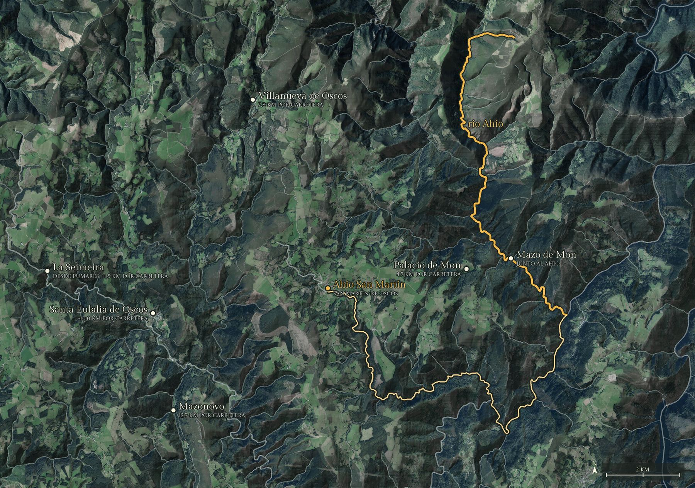
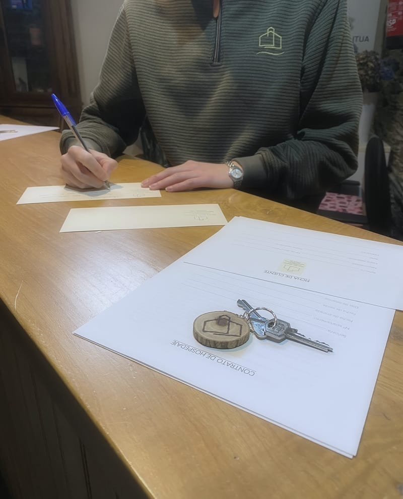

2 apartamentos
En la planta baja
Sin escaleras: el salón comedor con su cocina y el dormitorio con cama de matrimonio, todo en el mismo piso.
Fotos del apartamento 1.
Ver fechas en planta baja
Apartamentos rurales · San Martín de Oscos
Una casona de pizarra de principios del siglo XX, con una linterna acristalada en lo alto del tejado. Los lleva Ena.
El nombre
El Ahío es el río principal de San Martín de Oscos: en busca del oro que se encontraba en él llegaron aquí los romanos, en el siglo I.
No pasa por el pueblo: baja por Mon, a unos kilómetros, hasta el Agüeira. Ahío San Martín son ocho apartamentos rurales en el edificio que fue el ayuntamiento del pueblo, una casona de pizarra y piedra con la cornisa blanca y una linterna de cristal en lo alto.

| Apartamentos | 8 dobles, totalmente equipados |
|---|---|
| Plantas | 2 en la planta baja, sin escaleras · 6 dúplex en la primera planta (salón con cocina abajo; dormitorio con baño arriba) |
| Camas | Una cama de matrimonio por apartamento; dos de los dúplex, de 1,80 |
| Supletorias | Hasta 2 por apartamento, en el salón · 15 € por persona y noche |
| Cunas | 2 cunas de viaje · 10 €, una vez |
| Mascotas | Hasta 3 pequeñas o 2 grandes por apartamento · 12 € por noche, como mucho 72 € |
| Horarios | Entrada desde las 16:00 · salida hasta las 12:00 · check-in automático si lo prefieres |
| Servicios | Recepción, dos salones comunes, jardín y terraza, aparcamiento gratuito, calefacción central, lavandería · sin humo en todo el edificio |
| Distancias | Oviedo, unas 2 horas · Madrid, unas 5 horas · aeropuerto de Asturias, 130 km · estación de Oviedo, 170 km · playas, unos 50 km |
| Registro | AR.32.AS · Apartamento rural (Principado de Asturias) |
El edificio
Ayuntamiento
Se construyó a principios del siglo XX y fue el ayuntamiento de San Martín de Oscos.
Y también fue
Turismo Asturias cuenta que el edificio también albergó el centro social, la biblioteca, el centro médico y la cárcel.
Reformado
A principios de los noventa se reformó entero: piedra, madera y pizarra, con vigas de más de cien años.
Apartamentos rurales Casa de la Villa
Hoy son ocho apartamentos. Desde 2022 los lleva Ena.

Los apartamentos
Son muy parecidos: dos en la planta baja, sin escaleras, y seis dúplex en la primera planta, con el salón y la cocina abajo y el dormitorio con su baño arriba. Al reservar puedes contarle a Ena qué prefieres y te asigna el que mejor encaje.
2 apartamentos
Sin escaleras: el salón comedor con su cocina y el dormitorio con cama de matrimonio, todo en el mismo piso.
Fotos del apartamento 1.
Ver fechas en planta baja6 dúplex
Abajo, el salón con la cocina; arriba, el dormitorio con el baño en suite. Dos de ellos tienen cama de 1,80.
Fotos del apartamento 7.
Ver fechas en dúplexTelevisión, baño completo con bañera, ropa de cama, nevera, horno, vitrocerámica, microondas, cafetera italiana, tostadora, sartenes, potas, cuchillos, tabla y mantel.
Supletorias: hasta 2 por apartamento, en el salón, a 15 € por persona y noche. Cunas de viaje: hay 2, a 10 € una vez.
Y para todos: la recepción, el salón de arriba y el jardín.
Dentro
Además de tu apartamento, la casa es de todos: la recepción, dos salones comunes y el jardín. La decoración mira a Los Oscos: galochas, cardos, piñas y hortensias.
Galochas, cardos, piñas, hortensias
Hasta 3 pequeñas o 2 grandes por apartamento. 12 € por noche y apartamento, como mucho 72 €. Les espera su set: cama, manta, bebedero y galletas.
Quién lo lleva
Ena Mateos, de Santa Eulalia de Oscos, el concejo de al lado.
«Supe que lo mío era la hostelería cuando tenía 6 años, después de pasarme una semana enfadada con mi padre por no tener un bar donde pudiera trabajar con él.»
Estudió gestión y dirección de empresas hoteleras y pasó ocho años trabajando por el mundo. ¡De China me traje miles de ideas!
«Siempre digo que por cada puerta que se cierra, se abren muchas ventanas, y la mía se cerró en 2018.»
En 2020 volver a San Martín cobró más fuerza que nunca. Mi sueño se cumplió en 2022
, y desde entonces se dedica a recuperar tradiciones, historias, conocimientos y recetas de Los Oscos
.
Lo que ofrece, además de la cama
«Te ofrecemos nuestro tiempo. Tiempo para contarte todo lo que sabemos sobre Los Oscos, tiempo para hablarte de nuestras tradiciones y nuestra historia.»
«¡Os espero en el paraíso para contagiaros mi felicidad!»
La lana
Una filandeira es una mujer que hila; una xuntanza, una reunión.
«En 2023 realizamos la primera Xuntanza de Filandeiras. Fue una mañana estupenda donde vecinos y turistas nos reunimos alrededor de la lana para aprender el proceso completo de su elaboración.»
Desde entonces vuelve cada año. Ena la organiza para mantener viva la tradición y para que las personas mayores de la zona tengan un espacio donde reunirse, recordar y compartir lo que saben: son las propias personas que conocen estas técnicas quienes las muestran y explican
.
«Porque viajar también puede ser escuchar.»

Los Oscos
San Martín, Santa Eulalia y Villanueva de Oscos forman Los Oscos, dentro de la Reserva de la Biosfera Río Eo, Oscos y Terras de Burón (UNESCO, 2007).

Alrededor
Las rutas que Ena cuenta en su web, con la dificultad según su valoración. Ella te ayuda a elegir la tuya.
Baja 2 h · 8 km · circular · 200 m de desnivel
Empieza en la puerta de Ahío San Martín y sube a La Bouza, la zona alta del pueblo.
Baja 2 h · 9 km · circular · 400 m de desnivel
Desde la plaza de las Infantas, al monte Marón (897 m) y bajada por Ascuita.
Alta 3 h · 10 km · circular
Sale de San Martín y pasa por la antigua mina de plata, plomo y zinc.
Media 5 h · 13 km · circular · 270 m de desnivel
Por el Palacio de Mon y la capilla de Santa Marina hasta el Mazo de Mon, junto al Ahío.
Media 3 h · 8 km · lineal · 313 m de desnivel
Desde Pumares, a 1 km de Santa Eulalia, por el río Agüeira hasta la cascada: en la fala de Los Oscos, seimeira es cascada.
Media 3 h · 6 km · lineal · 350 m de desnivel
Desde Piorno, a 20 minutos en coche: la aldea de casas antiguas y las bocaminas de hierro.
Media 4,5 h · 13 km · circular · 480 m de desnivel
Desde Santa Eulalia (o As Casías): bosque, ríos y la Casa Natal del Marqués de Sargadelos.
Media 6 h · 15 km · circular · 580 m de desnivel
Desde Villanueva de Oscos, por las brañas y el Ecomuseo del Pan.
Alta 6 h · 9 km · circular · 450 m de desnivel
Desde A Ponte de Penacoba: el Pico del Somo y la sierra de la Bobia.
Alta 6 h · 15 km · circular · 800 m de desnivel
Desde A Coba, a 8 km: bosque frondoso, una louseira y las vistas de Nonide.
Alta 5 h · 13 km · circular · 688 m de desnivel
Desde la plaza de Santa Eulalia, por Ferreira y la Mina Carmina.
Alta 6 h · 11 km · circular · 650 m de desnivel
Desde San Cristóbal, por el valle del Ahío y cuatro aldeas casi vacías. La más difícil de la zona.
Casa Bonilla (bar restaurante) · El Pequenón (tienda bar) · supermercado · farmacia · gasolinera 24 h · cajero · consultorio · oficina de turismo · parque infantil · piscina en verano.
Los horarios cambian: pregúntaselos a Ena al llegar.
Reservar
Elige las noches, cuántos apartamentos y cuántos sois, y firma. Si lo prefieres, llama o escribe por WhatsApp al 644 835 772 o a hola@oscosahio.es.

Demostración. Así funcionaría la reserva directa en esta web. Las noches completas son de ejemplo, los precios son supuestos y no se envía, se guarda ni se cobra nada.
Solo se cobra a la llegada al alojamiento. Al reservar se pide un número de tarjeta de débito como garantía.
Si te llega un cargo de Ahío San Martín antes de reservar, es un fraude.
Puedes alojarte con un bono de Turismo Asturias de hasta 150 €; esta demostración no lo descuenta.
Lo mismo vale para cambiar las fechas.
Cómo llegar
Desde el norte: A-8 hacia A Coruña, salida a la N-634 hacia Vegadeo; se cruza Vegadeo hacia La Garganta y se sigue por la AS-13 hasta San Martín de Oscos.
Desde el sur: hasta Lugo, LU-530 a A Fonsagrada y hacia Grandas de Salime; en Barbeitos, la LU-27 hacia Santa Eulalia de Oscos y la AS-33 hasta San Martín de Oscos.
Solo al llegar. Al reservar se pide un número de tarjeta de débito como garantía. Si te llega un cargo antes de reservar, es un fraude.
Con más de 15 días de antelación, sin gastos. Entre 15 y 7 días, se puede retener la mitad del importe; con menos de 7 días, el importe entero. Lo mismo para cambiar las fechas.
Porque la limpieza, el lavado y planchado de las sábanas y la recepción cuestan casi lo mismo una noche que varias: limpiar un apartamento lleva unas dos horas. Para poder ofrecer estancias de una noche se cobra un suplemento.
Claro. Cada apartamento tiene un dormitorio con cama de matrimonio y en el salón caben hasta dos supletorias (15 € por persona y noche). Hay dos cunas de viaje (10 €, una vez). En el salón de arriba hay juegos para los niños.
Sí: hasta 3 mascotas pequeñas o 2 grandes por apartamento, 12 € por noche y apartamento, como mucho 72 €. Tienen su set: cama, manta, bebedero y galletas.
No, en ningún sitio del edificio (ley 28/2005). En la terraza hay ceniceros.
Al reservar le cuentas a Ena qué prefieres (planta baja sin escaleras, dúplex, cama de 1,80) y te asigna el que mejor encaje.